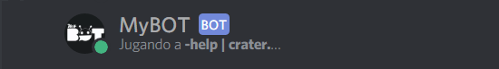

MyBot Guía
Instalación y uso de un editor de código
Creación de su cuenta App y de Bot
Instalación de Discord.js y Node.js
Introducción a un Bot de musica/audio
Ejemplos aplicando lo aprendido
Despues de seguir los pasos de los capítulos anterios y crear tu primer bot básico, vamos agregar mas comandos útiles con todo lo qué hemos aprendido, y un poco más. Aquí algunos ejemplos:
Avatar
if(command === 'avatar'){
let img = message.mentions.users.first()
if (!img) {
const embed = new Discord.RichEmbed()
.setImage(`${message.author.avatarURL}`)
.setColor(0x66b3ff)
.setFooter(`Avatar de ${message.author.username}#${message.author.discriminator}`);
message.channel.send({ embed });
} else if (img.avatarURL === null) {
message.channel.sendMessage("El usuario ("+ img.username +") no tiene avatar!");
} else {
const embed = new Discord.RichEmbed()
.setImage(`${img.avatarURL}`)
.setColor(0x66b3ff)
.setFooter(`Avatar de ${img.username}#${img.discriminator}`);
message.channel.send({ embed });
};
}Ping
if (command === 'ping') {
let ping = Math.floor(message.client.ping);
message.channel.send(":ping_pong: Pong!")
.then(m => {
m.edit(`:incoming_envelope: Ping Mensajes: \`${Math.floor(m.createdTimestamp - Date.now())} ms\`\n:satellite_orbital: Ping DiscordAPI: \`${ping} ms\``);
});
}Ban
if(command === 'ban'){
let user = message.mentions.users.first();
let razon = args.slice(1).join(' ');
if (message.mentions.users.size < 1) return message.reply('Debe mencionar a alguien.').catch(console.error);
if(!razon) return message.channel.send('Escriba un razón, `-ban @username [razón]`');
if (!message.guild.member(user).bannable) return message.reply('No puedo banear al usuario mencionado.');
message.guild.member(user).ban(razon);
message.channel.send(`**${user.username}**, fue baneado del servidor, razón: ${razon}.`);
}Server
if(command === 'server'){
var server = message.guild;
const embed = new Discord.RichEmbed()
.setThumbnail(server.iconURL)
.setAuthor(server.name, server.iconURL)
.addField('ID', server.id, true)
.addField('Region', server.region, true)
.addField('Creado el', server.joinedAt.toDateString(), true)
.addField('Dueño del Servidor', server.owner.user.username+'#'+server.owner.user.discriminator+' ('+server.owner.user.id +')', true)
.addField('Miembros', server.memberCount, true)
.addField('Roles', server.roles.size, true)
.setColor(0x66b3ff)
message.channel.send({ embed });
}User
if(command === 'user'){
let userm = message.mentions.users.first()
if(!userm){
var user = message.author;
const embed = new Discord.RichEmbed()
.setThumbnail(user.avatarURL)
.setAuthor(user.username+'#'+user.discriminator, user.avatarURL)
.addField('Jugando a', user.presence.game != null ? user.presence.game.name : "Nada", true)
.addField('ID', user.id, true)
.addField('Estado', user.presence.status, true)
.addField('Apodo', message.member.nickname, true)
.addField('Cuenta Creada', user.createdAt.toDateString(), true)
.addField('Fecha de Ingreso', message.member.joinedAt.toDateString())
.addField('Roles', message.member.roles.map(roles => `\`${roles.name}\``).join(', '))
.setColor(0x66b3ff)
message.channel.send({ embed });
}else{
const embed = new Discord.RichEmbed()
.setThumbnail(userm.avatarURL)
.setAuthor(userm.username+'#'+userm.discriminator, userm.avatarURL)
.addField('Jugando a', userm.presence.game != null ? userm.presence.game.name : "Nada", true)
.addField('ID', userm.id, true)
.addField('Estado', userm.presence.status, true)
.addField('Cuenta Creada', userm.createdAt.toDateString(), true)
.setColor(0x66b3ff)
message.channel.send({ embed });
}
}Ingresando al servidor guía MyBOT, y usando el comando "-ejemplo" podra ver mas ejemplos útiles para su bot.

BONUS: setGame y el comando help
.setPresence
La función .setPresence establece el estado del cliente(BOT), como una descripción de tipo ("PLAYING", "WATCHING", "LISTENING" y "STREAMING"), este último requiere una URL de secuencia (streamingURL).
Para poder agregar esta función en nuestro bot utilizamos esta linea de código dentro del evento ready:
client.on("ready", () => {
console.log("Estoy listo!");
client.user.setPresence( {
status: "online",
game: {
name: "help | crater",
type: "PLAYING"
}
} );
});Resultado:

Para el tipo STREAMING agregar (url: "https://www.twitch.tv/CraterMaik") debajo de name, y cambiar el type a "STREAMING".
Comando help
El comando help que vemos en casi todos los bots públicos, son usados para listar y detallar el uso de todos sus comandos. Y claro, no debe faltar en su bot.
Hay muchas formas de hacer/diseñar este comando, por ejemplo con un mensaje privado al usuario, usando mensajes embeds o markdown text para una mejor apariencia entro otros.
Aquí un ejemplo usando markdown text con los comandos aprendios en esta guía, hasta ahora:
if(message.content.startsWith(prefix + 'help')){
message.channel.send('**'+message.author.username+'**, Revisa tus mensajes privados.');
message.author.send('**COMANDOS DE MYBOT**\n```\n'+
'-> '+prefix+'ping :: Comprueba la latencia del bot y de tus mensajes.\n'+
'-> '+prefix+'avatar <@user> :: Muestra el avatar de un usuario.\n'+
'-> '+prefix+'decir :: Hace que el bot diga un mensaje.\n'+
'-> '+prefix+'user <@user> :: Muestra información sobre un usuario mencioando.\n'+
'-> '+prefix+'server :: Muestra información de un servidor determinado.\n'+
'-> '+prefix+'8ball :: El bot respondera a tus preguntas.\n'+
'-> '+prefix+'ban <@user> :: Banear a un usuario del servidor incluye razon.\n'+
'-> '+prefix+'kick <@user> :: Patear a un usuario del servidor incluye razon.\n'+
'-> '+prefix+'hola :: Retorna un saludo como mensaje.\n```\n\n'+
'**MyBOT - Server guía y de soporte Únete :**\nhttps://discord.gg/VxwER6t');
} Si tiene alguna pregunta y/o duda después de leer esta guía, ingrese al servidor guía en Discord: MyBOT - Server guía.
Sitio web github/Crater